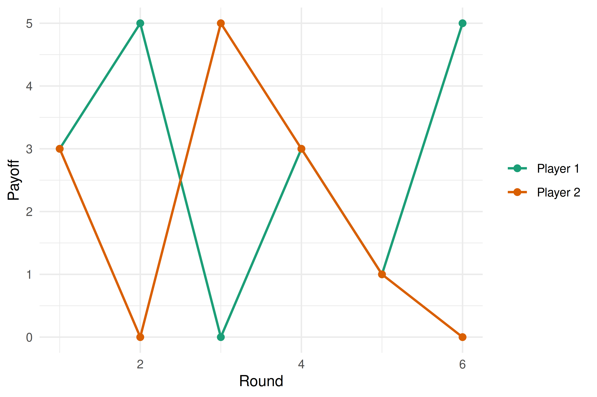

A R Refresher
A concise refresher on R fundamentals for readers who need a quick review.
This appendix provides a quick reference for the R features used most often in this book. It is not a substitute for a full R tutorial but should be enough to remind you of the essentials. For a deeper treatment, see Wickham et al. (2023).
A.1 Data structures
A.1.1 Vectors
Vectors are the fundamental data type in R. Every element must share the same type (logical, integer, double, character).
# Numeric vector
payoffs <- c(3, 0, 5, 1)
# Character vector
strategies <- c("Cooperate", "Defect")
# Logical vector
is_dominated <- c(FALSE, TRUE, FALSE)
# Sequence shortcuts
indices <- 1:10
grid <- seq(0, 1, by = 0.1)
# Vectorised arithmetic
payoffs * 2#> [1] 6 0 10 2
payoffs > 2#> [1] TRUE FALSE TRUE FALSEA.1.2 Matrices
Matrices are two-dimensional vectors. They are central to payoff representations throughout this book.
# Create a 2x2 payoff matrix (filled by column by default)
A <- matrix(c(3, 5, 0, 1), nrow = 2, byrow = TRUE)
rownames(A) <- c("Cooperate", "Defect")
colnames(A) <- c("Cooperate", "Defect")
A#> Cooperate Defect
#> Cooperate 3 5
#> Defect 0 1
# Matrix indexing
A[1, 2] # row 1, column 2#> [1] 5
A["Defect", ] # entire row by name#> Cooperate Defect
#> 0 1
# Dimensions
dim(A)#> [1] 2 2
nrow(A)#> [1] 2
ncol(A)#> [1] 2A.1.3 Lists
Lists can hold elements of different types and different lengths. They are used throughout the book to bundle game components together.
game <- list(
players = c("Player 1", "Player 2"),
payoff_1 = matrix(c(3, 5, 0, 1), nrow = 2, byrow = TRUE),
payoff_2 = matrix(c(3, 0, 5, 1), nrow = 2, byrow = TRUE)
)
# Access by name
game$players#> [1] "Player 1" "Player 2"
game[["payoff_1"]]#> [,1] [,2]
#> [1,] 3 5
#> [2,] 0 1
# Access by position
game[[1]]#> [1] "Player 1" "Player 2"A.1.4 Data frames and tibbles
Data frames (and their tidyverse counterpart, tibbles) are the primary structure for tabular data.
# Base R data frame
df <- data.frame(
strategy = c("Cooperate", "Defect"),
payoff = c(3, 1)
)
# Tidyverse tibble
tbl <- tibble(
strategy = c("Cooperate", "Defect"),
payoff = c(3, 1)
)
# Tibbles print more informatively
tbl#> # A tibble: 2 × 2
#> strategy payoff
#> <chr> <dbl>
#> 1 Cooperate 3
#> 2 Defect 1A.2 Control flow
A.2.1 Conditionals
x <- 5
if (x > 3) {
result <- "high"
} else if (x > 1) {
result <- "medium"
} else {
result <- "low"
}
result#> [1] "high"#> [1] "above" "below" "above" "below"A.2.2 Loops
# for loop
total <- 0
for (i in 1:5) {
total <- total + i
}
total#> [1] 15
# while loop
count <- 0
value <- 1
while (value < 100) {
value <- value * 2
count <- count + 1
}
count#> [1] 7A.2.3 The apply family
The apply functions replace explicit loops with concise functional calls.
#> [1] 22 26 30
# Apply across columns (margin = 2)
apply(A, 2, mean)#> [1] 2 5 8 11
# sapply returns a vector; lapply returns a list
sapply(1:5, function(x) x^2)#> [1] 1 4 9 16 25#> [[1]]
#> [1] 1
#>
#> [[2]]
#> [1] 2 2
#>
#> [[3]]
#> [1] 3 3 3#> [1] 1 4 9 16 25A.3 Functions
A.3.1 Defining functions
# A function that computes expected payoff
expected_payoff <- function(payoff_vec, prob_vec) {
sum(payoff_vec * prob_vec)
}
expected_payoff(c(3, 0), c(0.6, 0.4))#> [1] 1.8
# Default arguments
greet <- function(name, greeting = "Hello") {
paste(greeting, name)
}
greet("Alice")#> [1] "Hello Alice"
greet("Bob", greeting = "Hi")#> [1] "Hi Bob"A.3.2 Closures and environments
A closure is a function that captures variables from its enclosing environment. This pattern is useful for creating parameterised game constructors.
make_discounter <- function(delta) {
# delta is captured in the closure
function(payoffs) {
n <- length(payoffs)
weights <- delta^(seq_len(n) - 1)
sum(payoffs * weights)
}
}
discount_95 <- make_discounter(0.95)
discount_95(c(3, 3, 3, 3, 3))#> [1] 13.6
# The enclosed value of delta persists
discount_50 <- make_discounter(0.50)
discount_50(c(3, 3, 3, 3, 3))#> [1] 5.81A.4 Tidyverse basics
The tidyverse is a collection of packages for data wrangling and visualisation. This book uses it extensively.
A.4.1 The pipe operator
The pipe |> (base R 4.1+) or %>% (magrittr) passes the left-hand side as the first argument to the right-hand side.
#> [1] 9 7 4A.4.2 dplyr verbs
The five core verbs handle the vast majority of data manipulation tasks.
game_results <- tibble(
round = 1:6,
player_1 = c("C", "D", "C", "C", "D", "D"),
player_2 = c("C", "C", "D", "C", "D", "C"),
payoff_1 = c(3, 5, 0, 3, 1, 5),
payoff_2 = c(3, 0, 5, 3, 1, 0)
)
# filter: keep rows matching a condition
game_results |> filter(player_1 == "C")#> # A tibble: 3 × 5
#> round player_1 player_2 payoff_1 payoff_2
#> <int> <chr> <chr> <dbl> <dbl>
#> 1 1 C C 3 3
#> 2 3 C D 0 5
#> 3 4 C C 3 3
# mutate: create or modify columns
game_results |> mutate(total = payoff_1 + payoff_2)#> # A tibble: 6 × 6
#> round player_1 player_2 payoff_1 payoff_2 total
#> <int> <chr> <chr> <dbl> <dbl> <dbl>
#> 1 1 C C 3 3 6
#> 2 2 D C 5 0 5
#> 3 3 C D 0 5 5
#> 4 4 C C 3 3 6
#> 5 5 D D 1 1 2
#> 6 6 D C 5 0 5
# select: choose columns
game_results |> select(round, payoff_1, payoff_2)#> # A tibble: 6 × 3
#> round payoff_1 payoff_2
#> <int> <dbl> <dbl>
#> 1 1 3 3
#> 2 2 5 0
#> 3 3 0 5
#> 4 4 3 3
#> 5 5 1 1
#> 6 6 5 0#> # A tibble: 6 × 5
#> round player_1 player_2 payoff_1 payoff_2
#> <int> <chr> <chr> <dbl> <dbl>
#> 1 2 D C 5 0
#> 2 6 D C 5 0
#> 3 1 C C 3 3
#> 4 4 C C 3 3
#> 5 5 D D 1 1
#> 6 3 C D 0 5
# summarise (often with group_by)
game_results |>
group_by(player_1) |>
summarise(
mean_payoff = mean(payoff_1),
n_rounds = n()
)#> # A tibble: 2 × 3
#> player_1 mean_payoff n_rounds
#> <chr> <dbl> <int>
#> 1 C 2 3
#> 2 D 3.67 3A.4.3 Pivoting
Converting between wide and long formats is essential for plotting.
# Wide to long
game_long <- game_results |>
pivot_longer(
cols = starts_with("payoff"),
names_to = "player",
values_to = "payoff"
)
head(game_long)#> # A tibble: 6 × 5
#> round player_1 player_2 player payoff
#> <int> <chr> <chr> <chr> <dbl>
#> 1 1 C C payoff_1 3
#> 2 1 C C payoff_2 3
#> 3 2 D C payoff_1 5
#> 4 2 D C payoff_2 0
#> 5 3 C D payoff_1 0
#> 6 3 C D payoff_2 5
# Long to wide
game_long |>
pivot_wider(names_from = player, values_from = payoff)#> # A tibble: 6 × 5
#> round player_1 player_2 payoff_1 payoff_2
#> <int> <chr> <chr> <dbl> <dbl>
#> 1 1 C C 3 3
#> 2 2 D C 5 0
#> 3 3 C D 0 5
#> 4 4 C C 3 3
#> 5 5 D D 1 1
#> 6 6 D C 5 0A.4.4 ggplot2 layers
The grammar of graphics builds plots layer by layer: data, aesthetics, geometries, and scales.
game_results |>
pivot_longer(
cols = starts_with("payoff"),
names_to = "player",
values_to = "payoff"
) |>
ggplot(aes(x = round, y = payoff, colour = player)) +
geom_line(linewidth = 0.8) +
geom_point(size = 2) +
scale_colour_manual(
values = c(payoff_1 = "#1b9e77", payoff_2 = "#d95f02"),
labels = c("Player 1", "Player 2")
) +
labs(x = "Round", y = "Payoff", colour = NULL) +
theme_minimal()
Figure A.1: Payoffs across six rounds of a repeated game.
A.5 Useful idioms for this book
A handful of patterns recur throughout the chapters.
# Replicate a simulation many times
results <- replicate(1000, {
sample(c("Heads", "Tails"), 1)
})
table(results)#> results
#> Heads Tails
#> 499 501
# Outer product for payoff grids
p <- seq(0, 1, by = 0.25)
q <- seq(0, 1, by = 0.25)
payoff_grid <- outer(p, q, function(pi, qi) 3 * pi * qi + 1 * (1 - pi))
payoff_grid#> [,1] [,2] [,3] [,4] [,5]
#> [1,] 1.00 1.000 1.00 1.00 1.0
#> [2,] 0.75 0.938 1.12 1.31 1.5
#> [3,] 0.50 0.875 1.25 1.62 2.0
#> [4,] 0.25 0.812 1.38 1.94 2.5
#> [5,] 0.00 0.750 1.50 2.25 3.0
# Named vectors for readable code
strategy_names <- c(C = "Cooperate", D = "Defect")
strategy_names["C"]#> C
#> "Cooperate"#> [1] 49 65 25 74 18